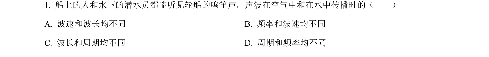
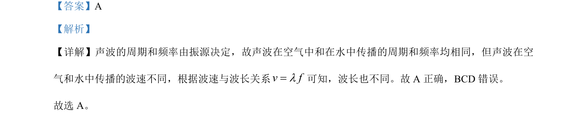

考点：周期 频率 波速 波长

声波在不同介质中传播时频率和周期不变，波速和波长不同

📄 原 PDF 第 1 页：
素材/真题/吉林/2008-2024·（吉林）物理高考真题/2023年高考物理试卷（新课标）（解析卷）.pdf
【答案】A 【解析】 【详解】声波的周期和频率由振源决定，故声波在空气中和在水中传播的周期和频率均相同，但声波在空 气和水中传播的波速不同，根据波速与波长关系v fl=可知，波长也不同。故 A 正确，BCD 错误。 故选 A。